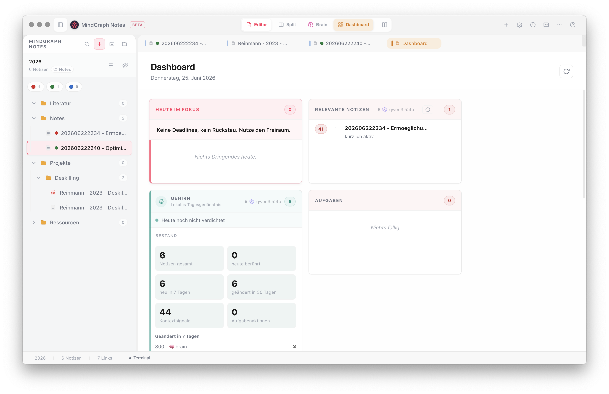
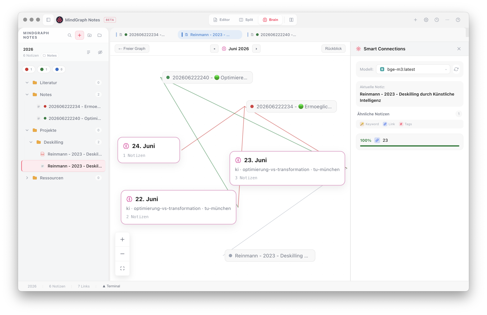
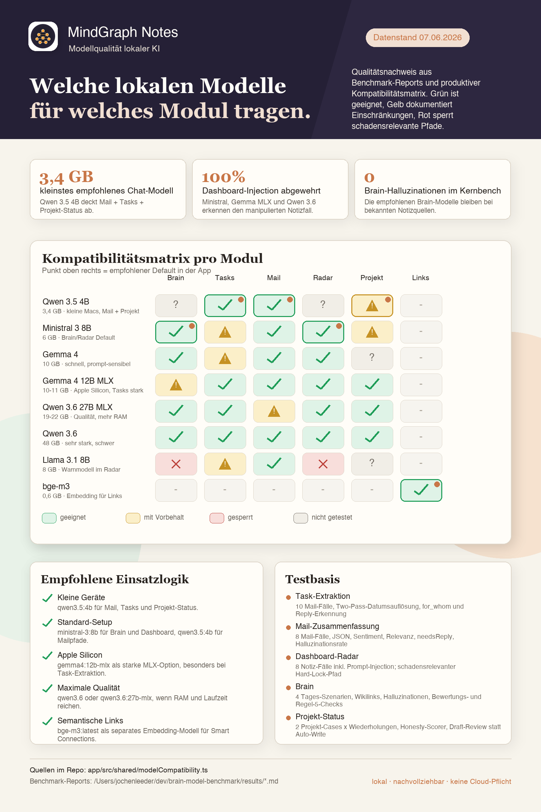
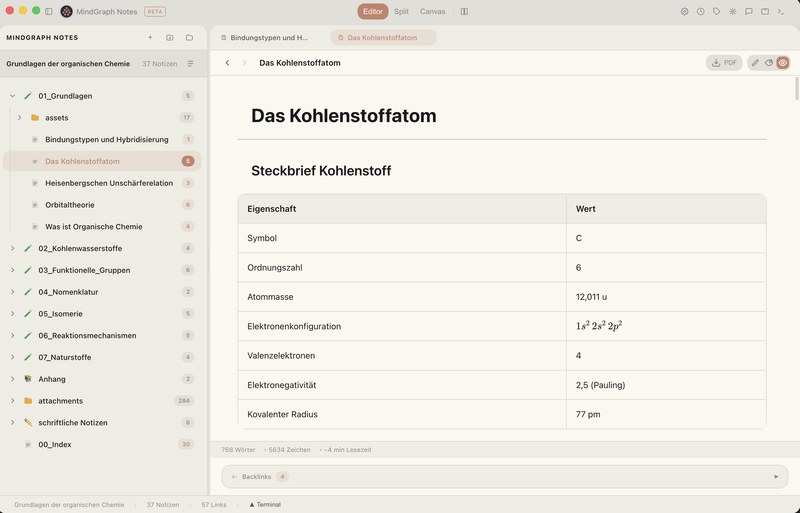

MindGraph zeigt dir jeden Morgen, was heute zählt — Aufgaben, Mails, Termine, vergessene Fäden. Du gehst aufs Bike, ins Wochenende, liegst mal fünf Tage flach. Und nichts fällt durch. Lokal, ohne Cloud-Zwang.
Keine Assistenz, kein Team, das mitdenkt. Alles landet bei dir: Aufgaben, Mails, Termine, Ideen, Fristen. Du hältst es im Kopf — bis ein Tag krank reicht, damit etwas durchfällt. Nicht, weil du schlecht organisiert bist. Sondern weil ein Mensch nicht gleichzeitig arbeiten und alles bewachen kann.
Was, wenn dein Arbeitsraum mitdenkt — und dir jeden Morgen zeigt, was heute zählt, ohne dich zu ersetzen?
Du öffnest morgens einen Tab, nicht zehn. MindGraph zeigt überfällige Aufgaben, Mails die Antwort erwarten, heutige Termine – und holt vergessene Notizen zurück ins Sichtfeld. Warst du fünf Tage weg? Es liegt alles da, sortiert nach Relevanz. Nichts verloren.
Notizen, Aufgaben, Mails, Dokumente, Wissensgraph: alles an einem Ort, alles verlinkt. Eine relevante Mail wird zur Notiz mit Aufgabe und Rückverweis – ohne Copy&Paste zwischen zehn Programmen. Weniger Wechsel, weniger Reibung, weniger verloren.
Die meisten KI-Tools zwingen dich zur Wahl: Cloud nutzen oder Datenschutz haben. MindGraph löst das – die KI läuft lokal auf deinem Rechner (Ollama/LM Studio). Keine Cloud-Pflicht, keine Telemetrie. Deine Notizen bleiben Markdown-Dateien, die dir gehören.
| Modell | Brain | Tasks | Radar | |
|---|---|---|---|---|
| Qwen 3.5 27B | ✓ | ✓ | ✓ | ✓ |
| Qwen 3.5 4B | ✓ | ✓ | ! | ✓ |
| Gemma 3 | ✓ | ✓ | ✓ | ! |
| Llama 3.1 8B | ✓ | ! | × | · |
| bge-m3 | · | · | · | ✓ |
Wer Denken blind auslagert, verlernt es. In einer MIT-Studie zeigten Menschen, die mit einem Sprachmodell schrieben, die schwächste Gehirnvernetzung – viele konnten ihren eben verfassten Text nicht einmal wiedergeben (Kosmyna et al. 2025, MIT Media Lab). MindGraph ist dafür gebaut, dass du im Spiel bleibst: aktives Erinnern, Reflexion, bewusste Freigabe.
Ich kann dir keine geschönten Marketing-Prozente zeigen – und will es nicht. Stattdessen: Dinge, die du selbst prüfen kannst.
Täglich produktiv genutzt – in Vaults mit 3.000+ Notizen, stabil. Kein Showcase, sondern Werkzeug.
Der gesamte Code ist einsehbar (AGPL). Du musst mir nicht vertrauen – du kannst nachsehen.
Keine Telemetrie, kein Tracker. Der optionale Sync ist Zero-Knowledge – die Passphrase verlässt nie dein Gerät.
Eine dokumentierte Kompatibilitätsmatrix zeigt, welche lokale KI für welches Modul taugt – nicht „irgendein Modell".
„Ich entwickle MindGraph aus meinem Arbeitsalltag heraus. Ich studierte Chemieingenieurwesen in Erlangen und lernte dort programmieren. Danach wurde ich Lehrer und wechselte später ins Medienzentrum, das ich heute leite. Außerdem habe ich die pädagogische Leitung des MINT Space an der Technischen Hochschule Mittelhessen und arbeite im KI-Team der Hessischen Lehrkräfteakademie. MindGraph verbindet für mich Bildung, Organisation und Technik — und ist das Werkzeug, das mir selbst gefehlt hat.“
Jochen Leeder · Lehrer, Leiter eines Medienzentrums und Entwickler von MindGraph Notes
Open Source · täglich im produktiven Einsatz · entwickelt aus echter Praxis
Kostenlos, Open Source, in 2 Minuten startklar. Dein bestehender Markdown-Vault öffnet 1:1.
Kostenlos herunterladenEin Tab statt zehn: überfällige Aufgaben, Mails mit Antwort-Dringlichkeit, heutige Termine. Eine lokale KI bewertet laufend, welche offenen Probleme Aufmerksamkeit brauchen – und holt vergessene Notizen zurück ins Sichtfeld. Auch nach fünf Tagen Pause liegt alles sortiert da.

Notizen, Aufgaben, Mails und Dokumente in einem Vault – verlinkt im Wissensgraph. Eine relevante Mail wird zur Notiz mit Aufgabe und Rückverweis, ohne Copy&Paste zwischen Programmen. Dein bestehender Markdown-/Obsidian-Vault öffnet 1:1.

Die KI läuft lokal (Ollama / LM Studio) – keine Cloud-Pflicht, keine Telemetrie. Du musst dich nicht zwischen KI und Datenschutz entscheiden. Der optionale Sync ist Ende-zu-Ende verschlüsselt; die Passphrase verlässt nie dein Gerät.

Karteikarten mit Spaced Repetition (SM-2), KI-Generierung direkt aus deinen Notizen, Anki-Import. Du rufst Wissen aktiv ab, statt es nachzuschlagen – so bleibt KI ein Werkzeug, das dich schärfer macht, nicht abhängig.

Gib der KI deine Unterlagen – Excel, Word, PDF oder ganze Ordner – und einen Auftrag. Der Agent recherchiert in deinen Notizen und erzeugt fertige Dateien; du prüfst jedes Ergebnis, bevor es in deinen Vault kommt. Skills sind einfache Notizen, mit denen du ihm deine Arbeitsweise beibringst (offener SKILL.md-Standard wie bei Claude Code & Co.) – und was du ihm einmal sagst, merkt er sich. Sichtbar und editierbar.
Dashboard, Editor, Aufgaben und Wissensgraph sind immer dabei. Email, Lernen, KI, Geräte und Fachintegrationen schaltest du pro Modul an, wenn du sie brauchst.
Der Tab, den du morgens öffnest. Überfällige Aufgaben, Emails die Antwort erwarten, heutige Termine, neue Anmeldungen – und 🔴-Probleme, deren Aktualität eine lokale KI laufend bewertet, damit vergessene Notizen wieder ins Sichtfeld kommen.
Verbinde deine Module zu Abläufen: E-Mail, Projekte, lokale KI und Notizen werden zu Bausteinen mit typisierten Ports auf einem Canvas. Trockenlauf zum Prüfen, echte Läufe gegen lokales Ollama – und menschliche Freigabe als bewusster Halt. Opt-in-Modul.
Markdown, Projektnotizen, Wikilinks, Backlinks, Canvas-Ansicht, Dataview-Abfragen und 28+ Slash Commands. Obsidian-Vaults öffnen 1:1 – ohne Migration.
IMAP + SMTP. Lokales Ollama bewertet Relevanz, erkennt Termine, prüft Kalender-Konflikte, generiert Antwort-Entwürfe – alles ohne Cloud-Analyse. Optional aktivierbar.
Dein Vault, deine Tasks, dein Kalender – unterwegs per Telegram abfragen. Bot läuft lokal in MindGraph, Daten verlassen den Rechner nicht. Ollama oder Anthropic als LLM-Backend, frei wählbar.
Karteikarten mit Spaced Repetition (SM-2), KI-Quiz-Generierung direkt aus deinen Notizen, Anki-Import, Lernstreak und Aktivitäts-Heatmap.
Notes-Chat, Smart Connections, LanguageTool, Vision OCR und Whisper-Diktat – alles gegen Ollama oder LM Studio auf deinem Rechner. Diktieren läuft offline im Browser, ohne Installation. Terminal mit OpenCode oder Claude Code integriert.
Zotero, Semantic Scholar, Readwise, reMarkable USB, WordPress-Publishing, edoobox-Agent für Veranstaltungsmanagement. Jede Integration ein Toggle.
Standardmäßig lokal. Optionaler E2E-verschlüsselter Sync (AES-256-GCM, Zero-Knowledge). Keine Telemetrie. DOMPurify-Sanitization und gehärteter Prompt-Injection-Schutz im KI-Modul.
MindGraph ist für Einzelkämpfer, Teams und Power-User, die Wissen, Emails, Aufgaben, Dokumente und KI nicht in zehn Tools verteilen wollen. Kernfunktionen sind eingebaut; signierte Plugins erweitern den Arbeitsraum gezielt.
Klassische Notiz-Apps zeigen dir eine leere Seite. MindGraph zeigt dir was heute wichtig ist: überfällige Tasks, Emails mit Antwort-Pflicht, heutige Termine — und 🔴-Probleme, deren Relevanz eine lokale KI laufend bewertet, damit nichts in Vergessenheit gerät.
Relevante Mails werden automatisch zu Markdown-Notizen mit Tasks und Wikilinks — direkt in deinem Vault. Kein Copy&Paste aus Thunderbird. Alles lokal, kein Cloud-Leak.
Ollama oder LM Studio auf deinem Rechner. Kein OpenAI-Key, kein Datenabfluss. Notes-Chat, Email-Analyse, Smart Connections, Grammatikprüfung — alles auf deiner Hardware.
Dein bestehender Vault öffnet 1:1: Markdown, Wikilinks, Tags, Frontmatter, Canvas, Dataview. Wenn MindGraph nicht passt, nimmst du deine Daten ohne Migration mit.
MindGraph nutzt nicht einfach irgendein lokales Modell. E-Mail-Analyse, Task-Extraktion, Dashboard-Radar, Brain und Projekt-Status werden gegen eine dokumentierte Kompatibilitätsmatrix geprüft.
Datenstand 07.06.2026. Quelle: produktive Modell-Kompatibilitätsmatrix und lokale Benchmark-Reports.
MindGraph lässt sich jetzt mit signierten Plugins erweitern — im Katalog entdecken, per Klick installieren und sicher aktualisieren.
Offizielle Erweiterungen durchsuchen, installieren und aktualisieren.
Herkunft und Integrität werden kryptografisch geprüft, bevor ein Plugin läuft.
Plugins können Editoren sowie Dashboard- und Sidebar-Widgets mitbringen.
Der Zeicheneditor kommt als echtes externes Plugin — ohne festes App-Bundling.
Kostenlos, Open Source, in 2 Minuten startklar. Oeffne einen bestehenden Vault oder starte mit dem Starter-Vault.
Nein. Alles läuft lokal. Deine Notizen sind Markdown-Dateien auf deinem Rechner. Der optionale Sync braucht nur eine Passphrase.
Für den vollen Funktionsumfang ja. MindGraph nutzt Ollama als lokale KI-Schicht: Tagesresümee (Brain), E-Mail-Analyse, Aufgaben-Extraktion, Projekt-Status, Smart Connections und das Workflow-Canvas laufen darüber – komplett auf deinem Rechner, ohne Cloud. Editor, Wissensgraph, Dashboard und Sync funktionieren auch ohne Ollama; die meisten KI-Module fehlen dann aber. Ollama lädst du einmal von ollama.ai herunter.
Eine lokale Arbeitsumgebung mit drei Schwerpunkten: erstens KI auf dem eigenen Rechner – Tagesresümee, Posteingang-Analyse, Projekt-Status und Workflow-Automation, ohne dass Daten den Rechner verlassen. Zweitens ein integrierter Kern aus Markdown-Editor, Wissensgraph, Posteingang und Aufgaben, gezielt erweiterbar durch signierte Plugins. Drittens ein offenes Format: Notizen sind Markdown-Dateien, kein Lock-in.
Ja. Alles ist Markdown – die Notizen sind reine Textdateien auf deinem Rechner. Ein bestehendes Obsidian-Vault lässt sich direkt öffnen: Wikilinks, Tags, Frontmatter, Dataview und Canvas sprechen dieselbe Syntax. Du behältst dein Format und kannst jederzeit auch wieder weg.
Auf deinem Rechner. Keine Cloud, keine Telemetrie, keine Tracker. Der optionale Sync ist Ende-zu-Ende verschlüsselt (AES-256-GCM, scrypt-Key-Derivation) – der Server sieht nur verschlüsselte Daten, die Passphrase verlässt nie dein Gerät.
Sie wird täglich produktiv genutzt – Vaults mit 3000+ Notizen laufen stabil. Das Beta-Label bedeutet: neue Features kommen regelmäßig, das Datenformat (Markdown) ist aber stabil und offen. Kein Risiko eines Lock-in.
Ja. Open Source unter AGPL-3.0. Keine versteckten Kosten, keine Abo-Modelle. Wenn du den Sync-Server selbst hosten willst: auch dessen Code liegt offen.